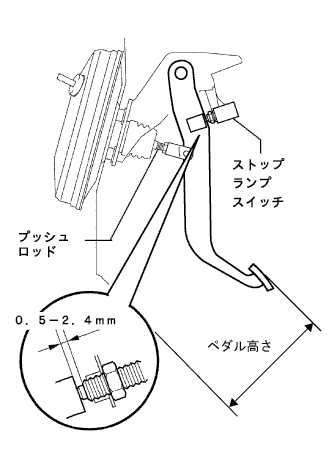

ブレーキ ペダルSUB-ASSY 調整 |
| 1. ブレーキペダル高さ点検·調整 |
ブレーキペダル高さ点検
ブレーキペダル高さ調整
コネクターをストツプランプスイツチから切り離す。
ストツプランプスイツチのロツクナットをゆるめ、ストツプランプスイッチを回してペダルを遊ばせる。
クレビスロックナットをゆるめ、プツシユロッドを回してブレーキペダル高さを調整する。
ストツプランプスイツチのねじ端部とブレーキペダルのクツシヨンの隙間が0.5-2.4mmになるようにストツプランプスイツチを調整し、ロツクナットおよびクレビスロツクナットを締め付ける。
コネクタをストツプランプスイツチに接続する。
|  |
ブレーキペダルを踏まない状態でストツプランプが点灯しないことを確認する。
| 2. ブレーキペダル遊び点検 |
エンジン停止後ブレーキペダルを数回強く踏み込み、ブレーキブースタ内の負圧がない状態にする。
 |
ブレーキペダルを軽く指で押して、ブレーキペダルの遊びを点検する。
| 3. ブレーキペダル踏み残りしろ点検 |
 |
ブレーキペダルを踏力500N {51kgf} で踏込んだ時の踏み残り代を点検する。